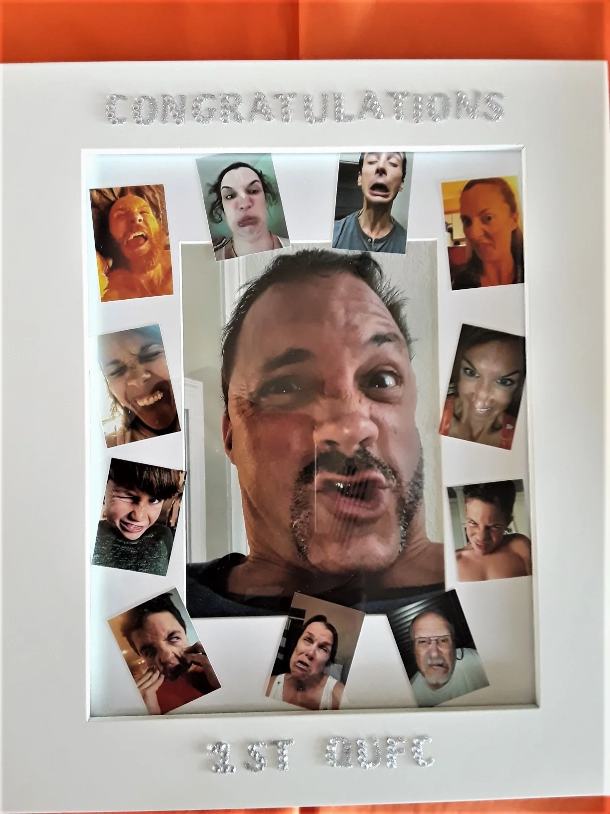
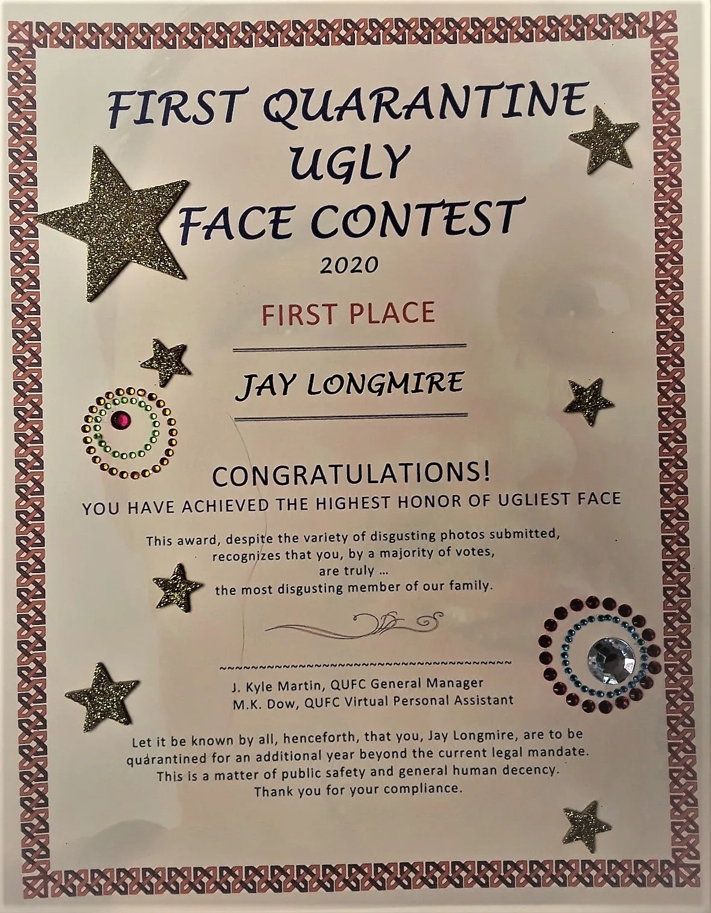
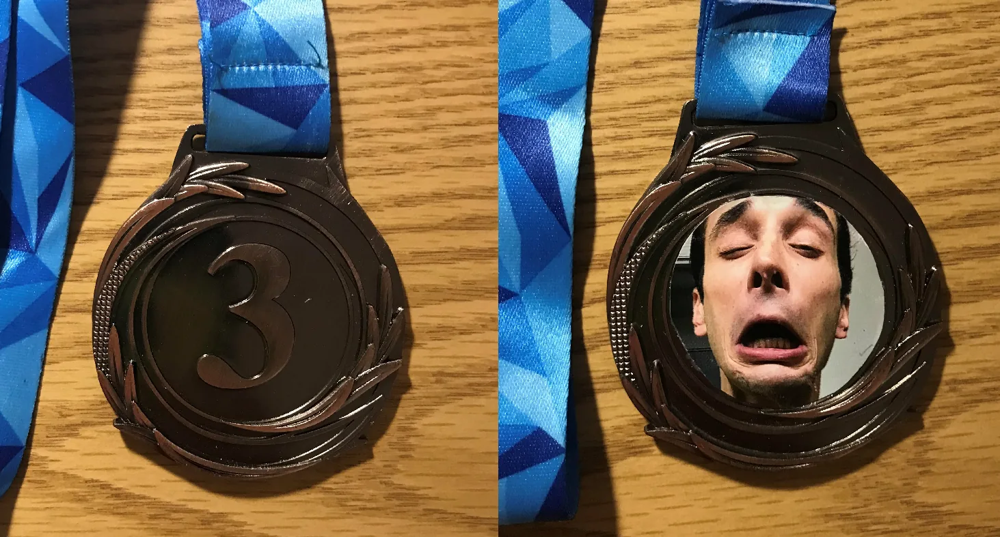

The Plaque
A permanent monument to one extremely temporary facial expression.
Glory has hardware
The QUFC takes prizes exactly as seriously as a family ugly-face contest should.

A permanent monument to one extremely temporary facial expression.

Because an achievement is not truly official until someone prints it on nice paper.

Gold, silver, and bronze medals recognize the top three finishers. Historically, winners could even carry their award-winning face on the medal itself.
The archive includes Jay's winner interview, preserved on its own page for posterity.
Watch the archived interview →